| Seal Hunting Newfoundland and Labrador Canada 1965 - 1966 Photo Albums | |
| Llewelyn | |
| UNKNOWN (2013) | |
ナイ ン -Nunatsiavu t 、ニューファンドラン ド· ラブラドール州、カナダのアザラシ猟についての貴重な歴史的写真。ジョンペニー住み 、 196 5 年か ら 196 6 年から、地域の学校で働いていたイギリスか ら 1 8 歳の自主サービス海外教師が撮影した。彼らは、文化的に重要な貢献をす る - 時代の教育の歴史とグラフィカル時ナインとその周辺の生活の豊かなタペストリーを描いています。それぞれのフォトアルバムは人生のコミュニティの道のさまざまな側面に焦点を当てています。何人かの読者が邪魔これらの写真のいくつかを見つけることがありますので、ご了承ください。日本 語/ 英語のキャプション（表紙写真：デビッ ド· ハリス撮影やティラーアルバートアットフォード ） Valuable historical photographs about seal hunting in Nain-Nunatsiavut, Newfoundland and Labrador, Canada. Taken by John Penny an 18 year old Voluntary Service Overseas teacher from the UK who lived and worked in the local community school from 1965-66. They make an important contribution to the cultural -- educational history of the period and graphically depict the rich tapestry of life in and around Nain at the time. Each photo album focuses on different aspects of the community's way of life. Please note that some readers may find some of these photographs disturbing. (Cover Photograph: David Harris shoots and Albert Ford at tiller) Japanese/English captions
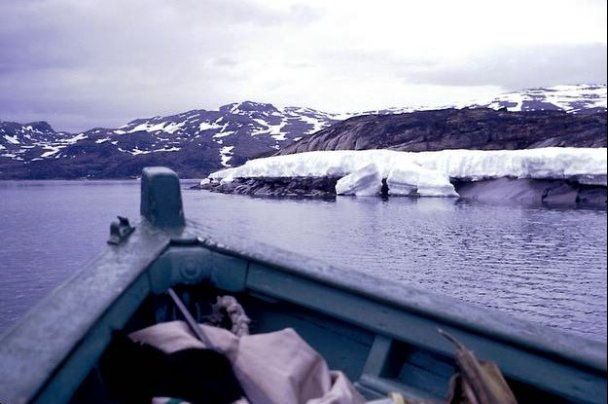
アルバートフォード、ブラック島付近の氷と一緒に With Albert Ford, ice near Black Island
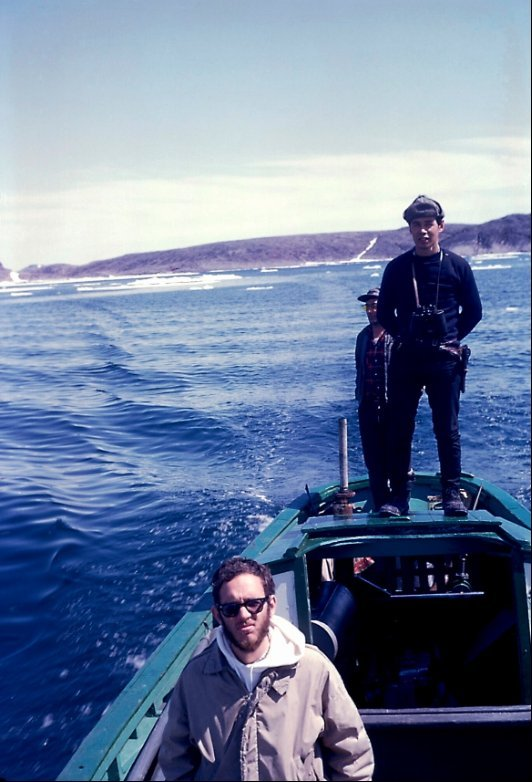
ジェローム、デビッドハリス＆目を光らせてアルバートフォー ド ; Jerome, David Harris & Albert Ford on lookout ;
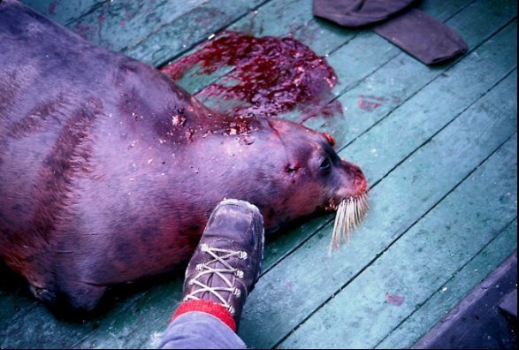
ボートでは、シール、ジェロー
ム
;
Seal in boat, Jerom
e
;
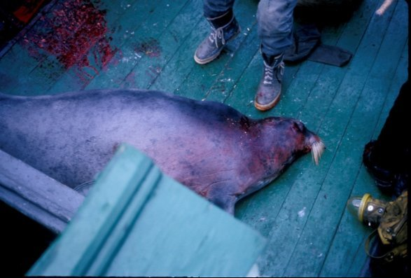
ボートでは、シール
Seal in boa
t
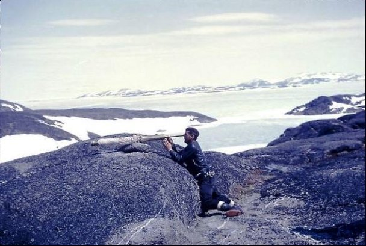
望遠鏡を使って、検索前、ジョ
ン·
フォード、ブラック
島
Prior search using telescope, John Ford, Black Islan
d
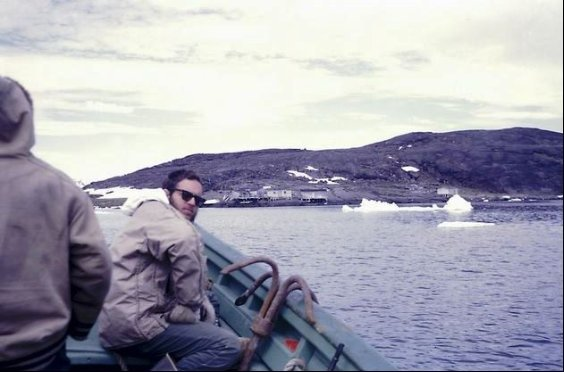
ジェローム＆アルバートフォー
ド
-
ブラック島近く
Near Black Island - Jerome & Albert Ford
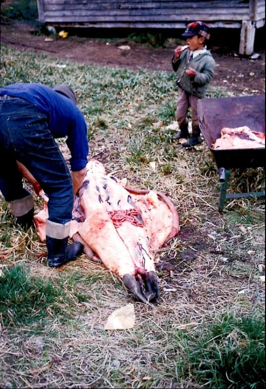
Joas Igliot e スキンシール Joas Iglioteskins a sea l
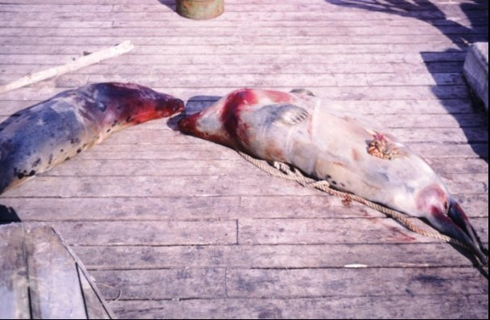
ホウォーフ川のデッドシール
Dead seal on wharf
e
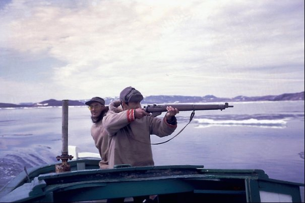
デビッ
ド·
ハリスシュート＆ティラーアルバートアットフォード
David Harris shoots & Albert Ford at tille
r

シールの完全なボート
Boat full of seal
s
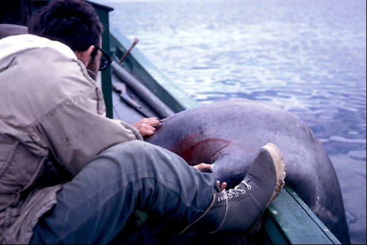
ジェローム＆デヴィッ ド· ハリスは、ボード上の若いフリッパーを運ぶ Jerome & David Harris haul a young flipper on board
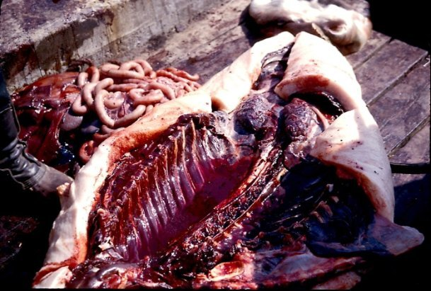
1
の内側
Inside of on
e
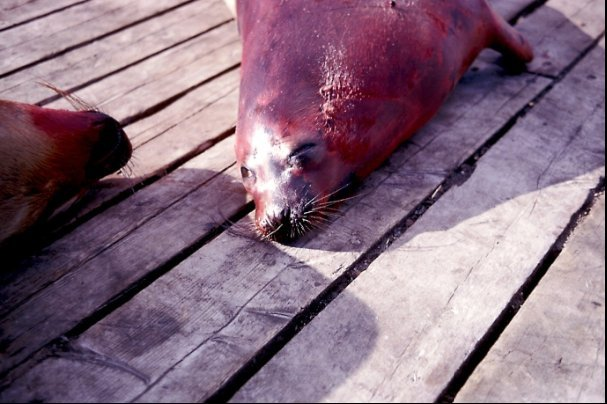
ホウォーフ川で死んだアザラシ
Dead seals on wharf
e
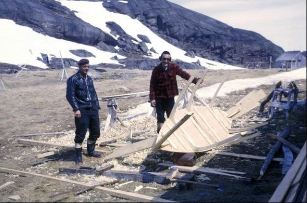
ボートの建 物 - ジョン＆ウィルフレッ ド· フォード Boat building - John & Wilfred For d
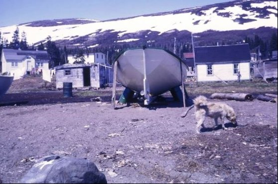
ボ ブ Voise y のボー ト - 起動する準備ができて 、6月 66 Bob Voisey's boat - ready to launch, June 66
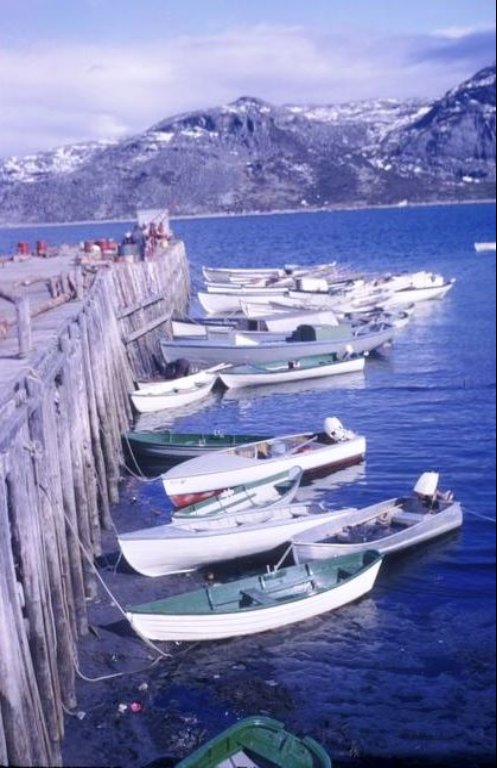
ボート
は6月
6
6
、ホウォーフ川に縛ら
Boats tied to wharfe, June 6
6
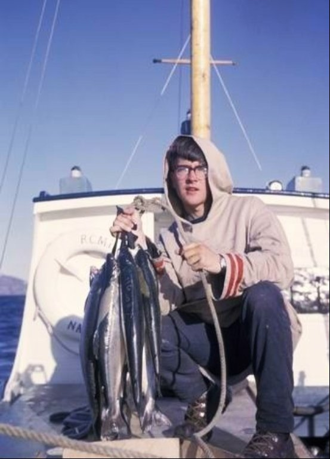
ナイン 春 196 6 近 く RCM P のボートに乗ってマスのジョ ン· ペニー John Penny with trout on RCMP boat near Nain Spring 1966
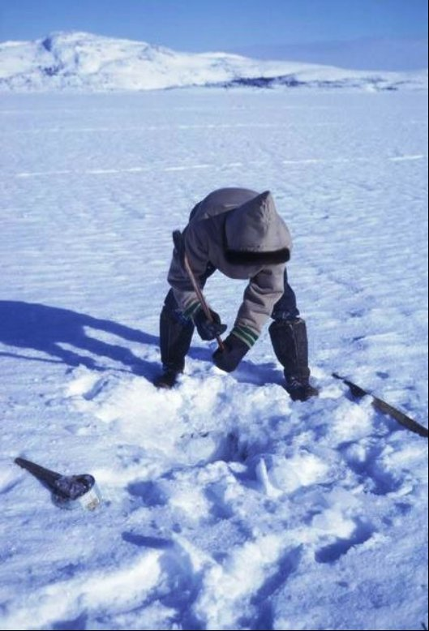
ジギング：最初の氷に穴をあけ Jigging: first cut a hole in the ice
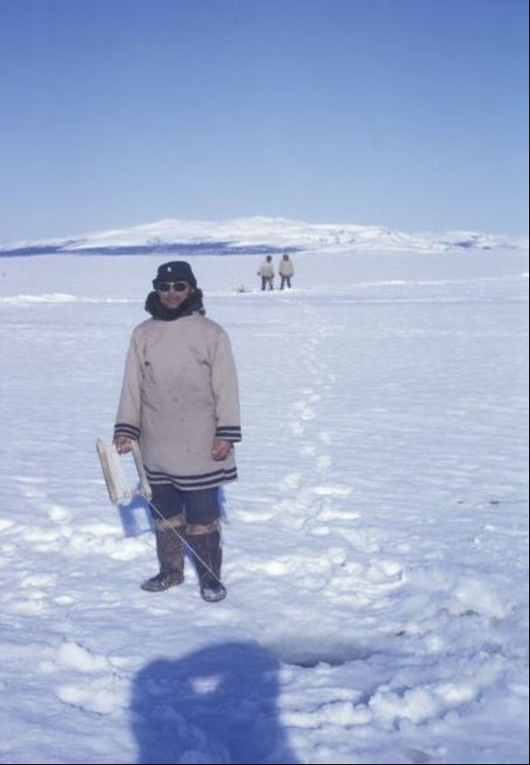
ノーザンオフポイントタラのジギング Jigging for cod off Northern Point
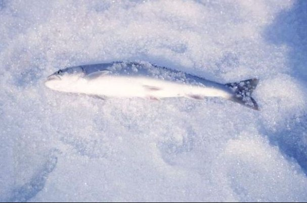
私の最初の塩水のマスは氷穴から捉えました。 My first salt water trout caught through an ice hole.
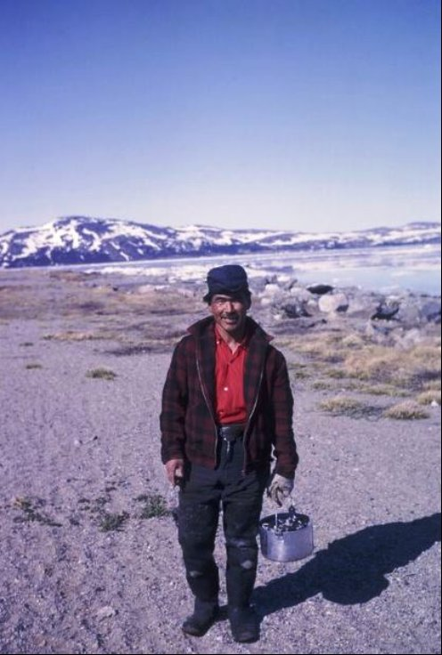
シシャモ と Lapp a グリーン、ノーザンポイント LappaGreen with capelin, Northern Poin t
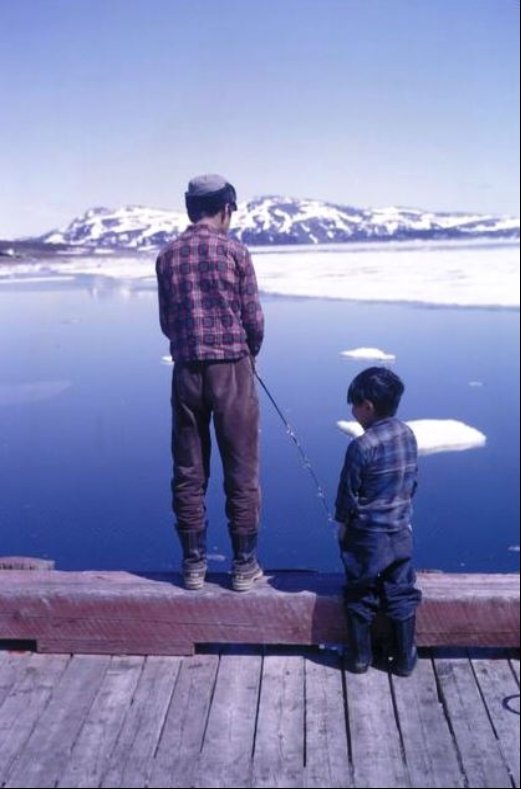
ブレークアップ
の
Ji
m
アンデルセン釣り
Jim Andersen fishing at break-u
p
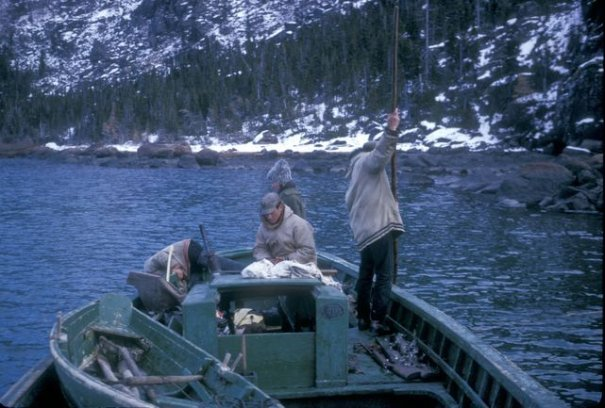
ヘンリー＆ビ
ル·
ウェッブ、マリィ、バー
ト
Voise
y
と釣り
Fishing with Henry & Bill Webb, Mairi, Bert Voisey
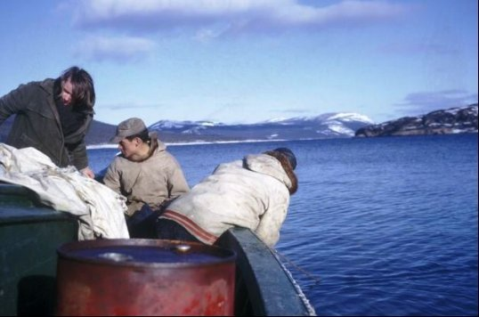
ヘンリー＆ビ ル· ウェッブ、マリィ、バー ト Voise y と釣り Fishing with Henry & Bill Webb, Mairi, Bert Voisey
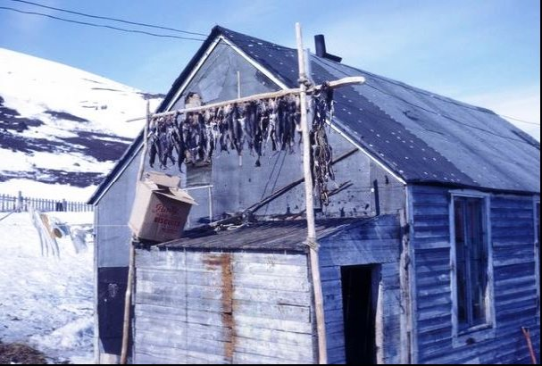
タラの
魚
-
ブラウン夫人の家
に
Pips
i
乾燥
Cod fish - Pipsi- drying on Mrs. Brown's hous
e
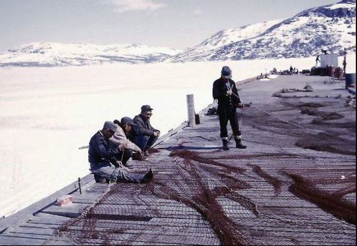
修繕タラトラップ、ト
ム·
バーバー＆クルー
Mending cod traps, Tom Barbour & cre
w
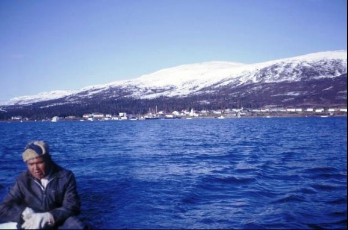
アモスフォック
ス
-
ジョー
ジ·
ディッカー
と
Codding
Codding with George Dicker - Amos Fo
x
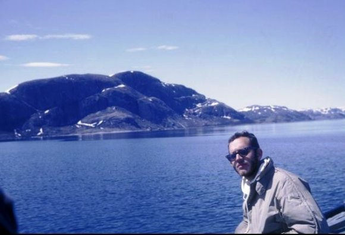
Tikkoataku k ベイ 、 RCM P とジェロームの釣り Fishing in TikkoatakukBay, Jerome with RCM P
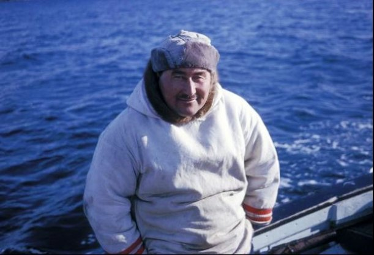
ジョー ジ· ディッカー は coddin g 連れて行ってくれました George Dicker took us codding